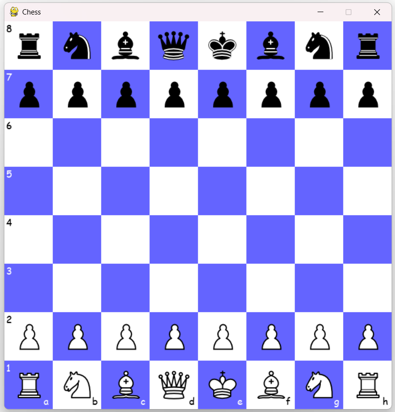
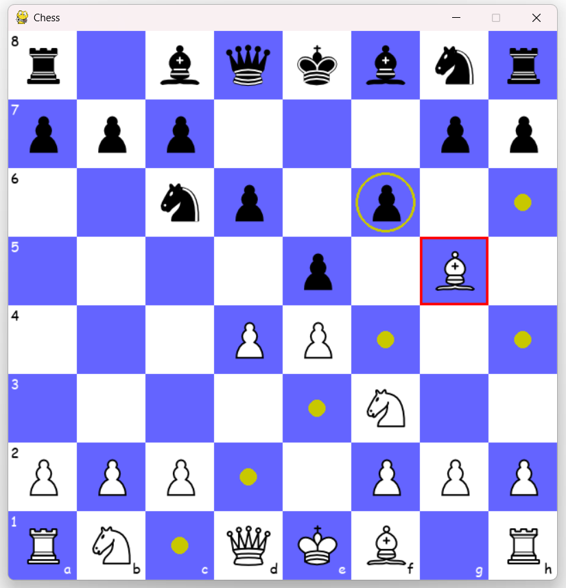

Every piece is its own class
There's no shared "chess engine" computing legal moves centrally, each piece type (Pawn, Rook, Bishop, Knight, Queen, King) is its own class that figures out its own valid moves every frame, by scanning the full list of pieces on the board.

Sliding pieces: Rooks, Bishops, and the Queen
Rooks move in straight lines, Bishops move diagonally, and the Queen just combines both. Each direction is checked independently by walking outward one square at a time until it hits the edge of the board or another piece.
for i in range(1,9):
if not self.tf:
if self.y - i == -1:
self.t = i
self.tf = True
break
for piece in pieces:
if piece.y == self.y - i and self.x == piece.x:
self.t = i
if piece.c != self.c:
self.tcap = i
self.tf = True
breakThis is the "top" direction check for a Rook. It counts
outward until it either falls off the board (self.y -
i == -1) or bumps into another piece, at which
point it stops and records whether that piece was an enemy
worth capturing (piece.c != self.c).

The Bishop does the same thing along diagonals, and the Queen just runs both the Rook's four directions and the Bishop's four diagonals.
Fixed position pieces: Knights and the King
Knights and Kings don't need to scan outward, they only ever consider a small fixed set of offset squares.
if piece.x == self.x-1 and piece.y == self.y-2:
self.tl = False
if piece.c != self.c:
self.tlcap = TrueEach of the Knight's 8 possible L shaped jumps is just checked directly against the board, is that square empty, occupied by a friendly piece, or capturable. The King works almost identically, just with its 8 adjacent squares instead of L shapes.
Pawns are the odd one out
Pawns move differently depending on direction (light pieces move up the board, dark pieces move down), can move two squares only on their first move, and capture diagonally instead of forward, all special cases none of the other pieces need.
if not self.moved and not self.blocked and not self.dblocked:
self.movable.append((self.x,self.y-1))
self.movable.append((self.x,self.y-2))
elif not self.blocked:
self.movable.append((self.x,self.y-1))self.moved tracks whether this specific pawn has
ever moved before, once it has, the two square opening move
is disabled.
The sliding animation
Pieces don't teleport to their destination, they glide there over a fixed number of frames.
if self.moving and self.count != speed:
self.xcoor += self.toxcoorval
self.ycoor += self.toycoorval
self.count += 1When a piece moves, the code calculates a fixed per frame
pixel step (toxcoorval/toycoorval)
and adds it to the piece's position every frame for
speed (10) frames straight, at that point it's
snapped exactly onto its true destination.
What's not here
This is piece movement, not a full legal chess engine. There's no turn enforcement (either side can move any piece at any time), no check or checkmate detection, no castling, en passant, or pawn promotion. Every piece correctly computes where it's allowed to move on its own, but nothing stops you from walking your King into check.